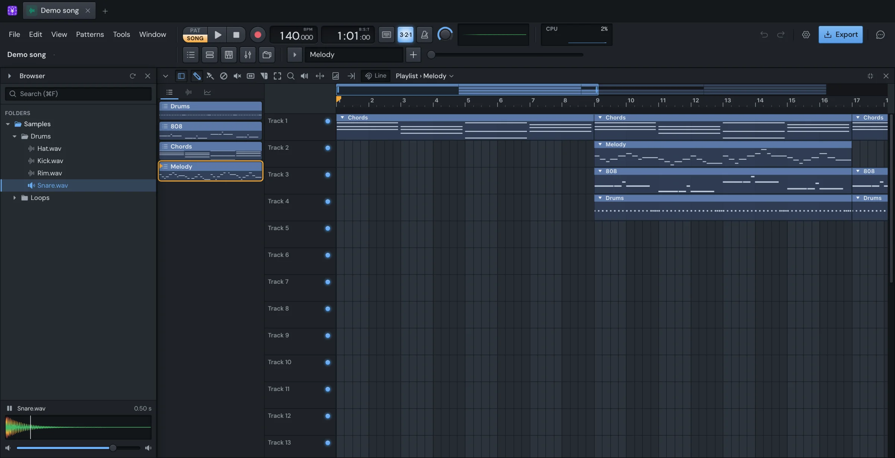

Make
Browser
The Browser shows your own sample folders, so you can find a sound, hear it and put it in the song without leaving the app. It lists audio files only. Its folders and favourites are the same in every song.
It sits along the left of the desktop. Show or hide it with ⌥F8 or ⌥5, or from the Window menu. Drag its right edge to make it wider or narrower; the other windows keep to the space beside it.

Add your sample folders
- Open the Browser's menu: the arrow at its top left.
- Choose Add a folder… and pick a folder.
You can also drag folders from Finder or File Explorer straight onto the Browser. With no folders yet, the Browser offers Add a folder… too.
Folders stay where they are on your computer: the Browser reads them, it doesn't copy them. Add the folder that holds your packs rather than each pack: everything inside it is included.
New files in your folders show up by themselves. If something seems missing, press the refresh button at the top of the Browser or choose Read the folders again in its menu.
Remove a folder
Right-click a folder you added and choose Remove from the Browser. Nothing is deleted from your computer. A folder that has moved or gone shows faded until you remove it or it's back.
Move through the tree
Your folders are listed under Folders, each opening to its folders first, then its files.
- Click a folder to open or close it. Several can be open at once.
- Close every folder in the Browser's menu, or ⌘↑, closes them all.
- With the list focused, ↑ and ↓ move through the rows. → opens a folder or goes into it, ← closes it or goes back out.
- Home and End jump to the first and last rows, Page Up and Page Down a screen at a time.
Hover over a row to see its full path.
Preview samples
Press a file to hear it. It starts as the button goes down, so you can play it in time with the song. Moving onto a file with the arrow keys plays it too.
A preview plays the whole file, until the next one cuts it off.
- Escape stops it.
- Space pauses it while one is playing. Press the play button in the preview bar to go on from there.
The preview bar at the bottom of the Browser shows the selected file: its name, how long it is and its waveform, with a line where the preview has got to. Click anywhere in the waveform to play from there. The slider under it sets the preview's volume.
Search
Start typing while the list has the focus, or press ⌘F or / to go to the search box. Results come as you type, from every folder you've added.
- The words can be in any order:
kick 808finds808 Kit/Kick 3.wav. - A word can match a file's name or the folder it's in.
- A slip of a letter or two in a longer word still finds it.
Results are a flat list, best first, each with the folder it's in. The number beside the box says how many there are.
In the search box, ↓ or Enter goes to the first result and plays it. Escape clears the search; with the list focused, Escape clears it too once nothing is playing.
Choosing a folder among the results shows it in the tree. Right-click a result and choose Show in its folder to see a file where it lives.
Star your favourites
Hover over a file or folder and click the star at the end of its row. Click it again to take it off. Right-click gives Add to favourites and Remove from favourites too.
Favourites are listed under Favourites, above your folders. A starred folder opens right there, like any other. If you'd rather it took you to the folder in the tree, turn off Open favourite folders in place in Settings.
Put samples in the song
Drag them
Drag a file, or several selected ones, from the Browser onto:
- The Channel rack: a new sampler channel where you drop it, one for each file.
- A channel's button or its settings window: that file replaces the channel's sample.
- The Piano roll: replaces the sample of the channel it shows. If that channel plays a plugin, you get a new channel instead.
- The Playlist: audio clips where you drop them.
- An empty part of the desktop: new channels.
To select several files, ⌘-click them one by one, or ⇧-click to select a run. ⌘A selects every file listed.
The first time you use a file, it's copied into your song, so the song keeps working if the file moves.
Send them to a channel
Select a channel in the Channel rack, then in the Browser:
- Press Enter on a file, or middle-click it, to make it that channel's sample.
- Right-click a file and choose Send to followed by the channel's name.
This goes to the first selected sampler channel. With no sampler selected, the file becomes a new channel, selected, so the next one you send goes there. While the song is stopped, the file plays as it's sent.
Try samples in the beat
With a channel selected and the pattern playing, press ⇧↓ or ⇧↑. The Browser moves to the next or previous file and sends it straight to the channel, so you hear each kick or hat in the beat as you go. Every file you try counts as one undo step: ⌘Z brings back the sample you started with.
Open in new channels
Right-click a file and choose Open in new channel. With several selected, it's Open … files in new channels: each becomes a channel at the end of the rack.
Right-click menus
A file's menu:
- Send to the selected channel
- Open in new channel
- Play
- Show in its folder (in favourites and search results)
- Show in Finder (or File Explorer)
- Add to favourites or Remove from favourites
A folder's menu has Open or Close, Show in its folder where it applies, Show in Finder and the favourites item. A folder you added also has Read again and Remove from the Browser.
Keys
These work while the Browser's list has the focus.
| Key | What it does |
|---|---|
| ⌥F8 or ⌥5 | Show or hide the Browser (anywhere) |
| ↑ / ↓ | Previous or next row, playing a file |
| ⇧↑ / ⇧↓ | Previous or next file, sent to the selected channel |
| → / ← | Open a folder or go into it / close it or go out |
| Home / End | First or last row |
| Page Up / Page Down | A screen up or down |
| Enter | Open a folder, or send a file to the selected channel |
| Escape | Stop the preview, or clear the search |
| Space | Pause the preview while one plays |
| ⌘F or / | Search |
| ⌘A | Select every file listed |
| ⌘↑ | Close every folder |
Something here wrong or missing? Tell us.